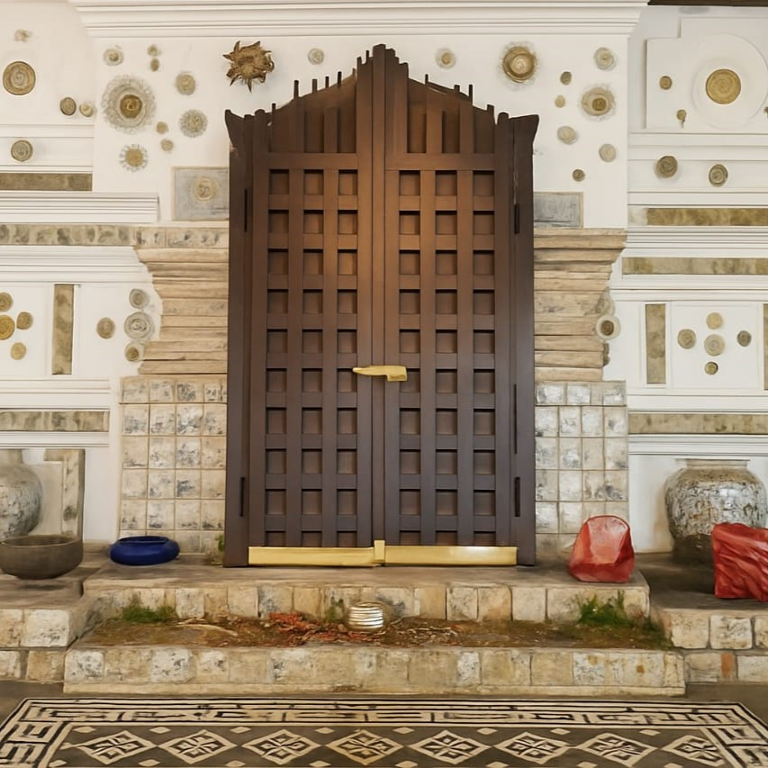

Makam Sunan Gunung Jati Cirebon, Pusat Ziarah Wali Songo yang Menjaga Warisan, Memelihara Tradisi, dan Mempererat Generasi
Diposting 07 juli 2025
Makam Sunan Gunung Jati Cirebon menjadi simbol dakwah Islam, pusat ziarah, napak tilas sejarah, serta ruang berkumpul peziarah.

Kebanggaan Kota Cirebon: Makam Sunan Gunung Jati
Makam Sunan Gunung Jati adalah kompleks makam Wali Songo kebanggaan warga Cirebon. Tempat ini menjadi tujuan ziarah, doa bersama, napak tilas dakwah Islam, hingga belajar sejarah. Suasananya khidmat untuk berdoa, tahlilan, dan memahami warisan leluhur.
- Gapura Kuno & Pintu Gerbang Ukiran Khas Cirebon
- Kompleks Makam yang Dijaga & Dirawat Peziarah
- Tempat Doa Bersama, Tradisi Tahlil, dan Ziarah Akbar
- Area Parkir Luas dengan Akses Lokasi Ziarah Mudah
Dengan nilai sejarah dan agama yang kuat, Makam Sunan Gunung Jati bukan hanya tempat ziarah, tetapi juga saksi penyebaran Islam di Tanah Jawa yang membanggakan Kota Cirebon.
Baru saja
Makam Sunan Gunung Jati tenang dan sakral. cocok buat ziarah keluarga!